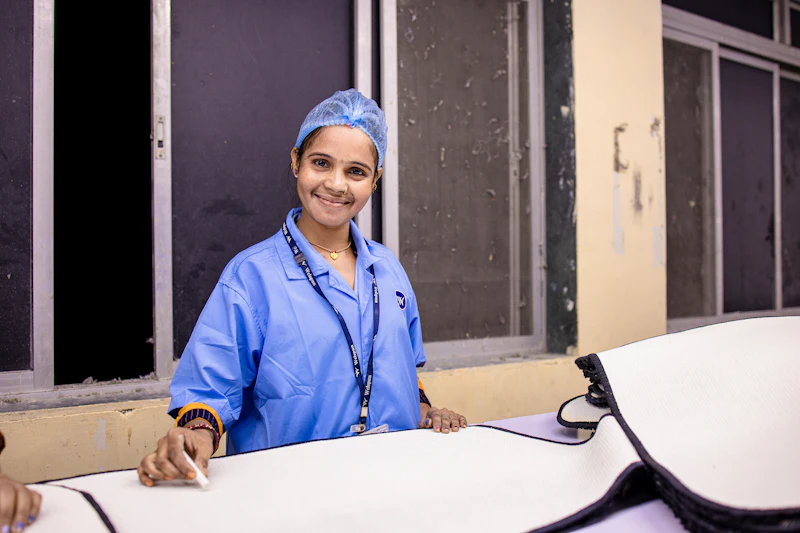
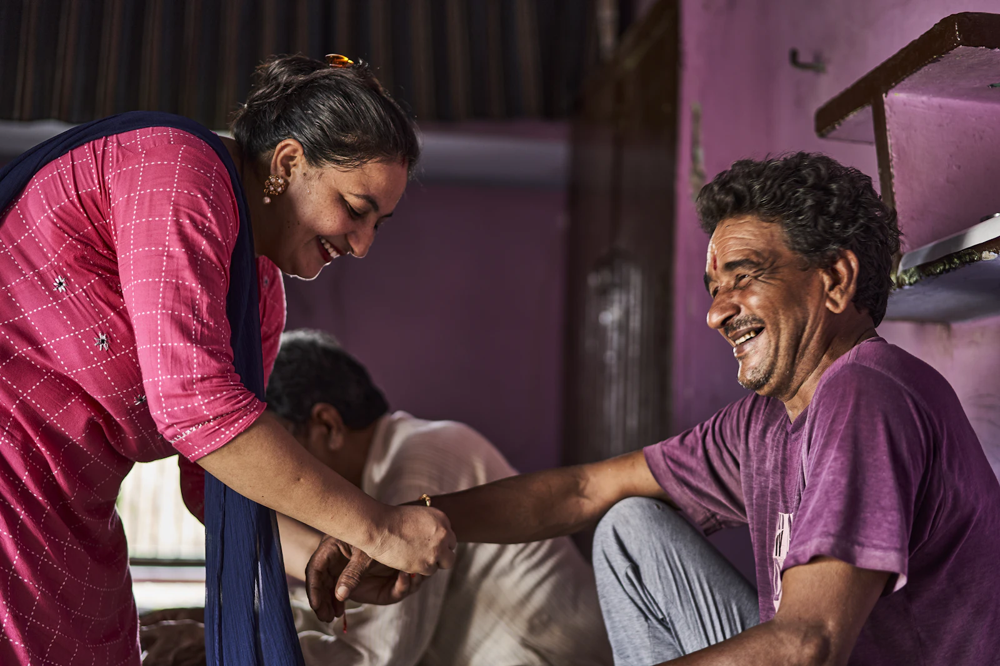
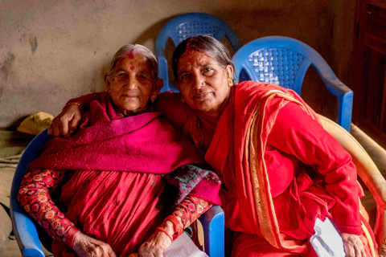
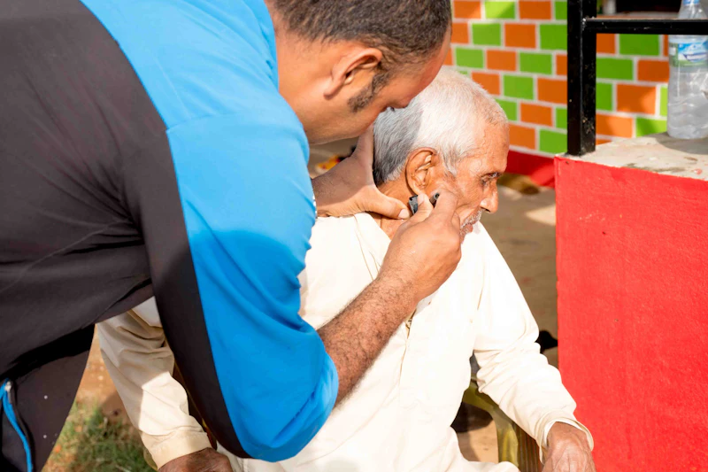
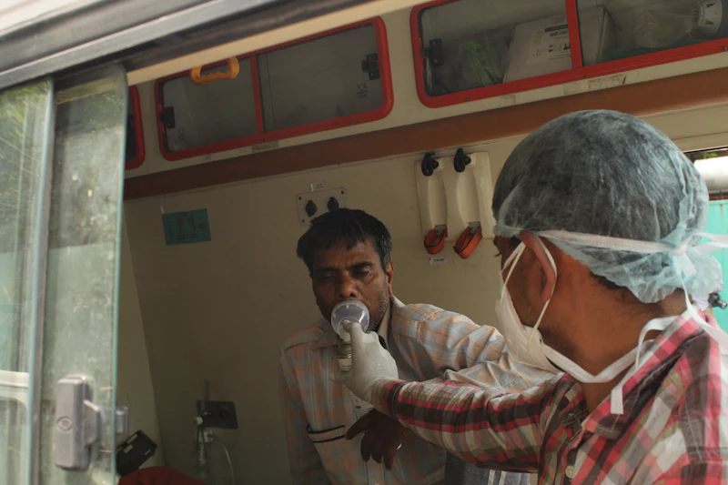
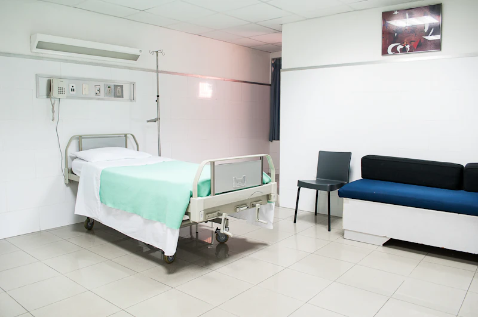
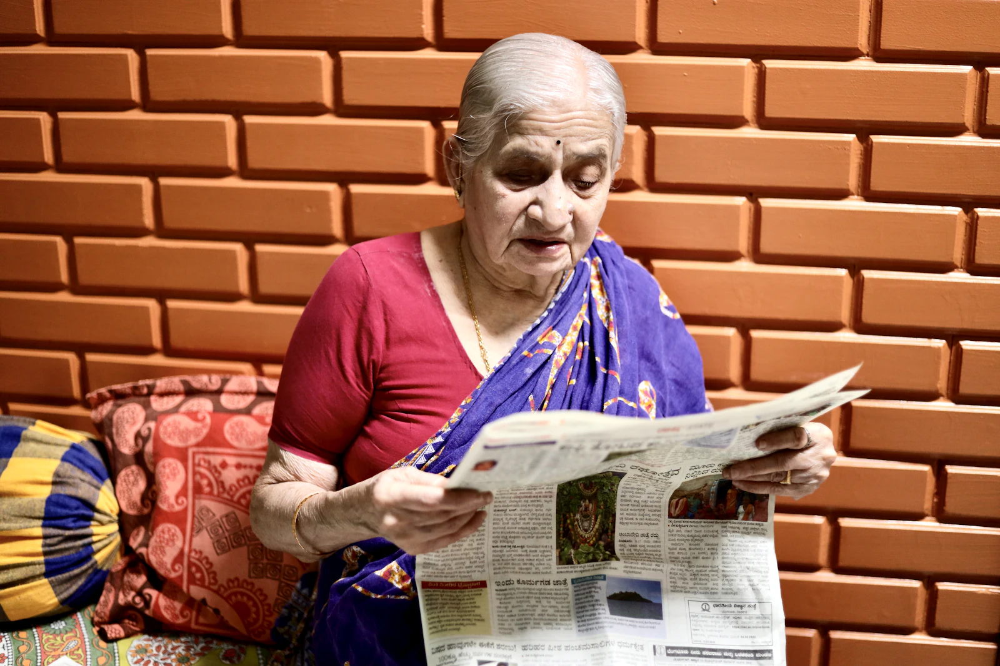

Nursing Care at Home
Trained nurses for 24-hour patient care at home: elderly and bedridden care, home ICU setup with critical care nursing, and recovery after a hospital stay.
Learn more about Nursing Care at Home
Home nursing & elderly care in Delhi NCR
Nurses, attendants, 24-hour care and home ICU setup across Noida, Greater Noida and Delhi NCR.

Manna Home Care is a home healthcare provider based in Sector 12, Noida, caring for patients and families across Delhi NCR. We believe recovery, comfort and dignity are best supported in familiar surroundings, close to the people who matter most.
Whether your loved one needs 24-hour nursing care at home, a home ICU setup after a hospital stay, an elderly care attendant for daily support, a doctor’s visit, physiotherapy at home, help with a newborn or medical equipment on rent, we organise dependable care around your family’s needs.
From nursing care and elderly care attendants to physiotherapy at home and medical equipment on rent: five services, one caring team. Choose what you need or talk to us and we’ll help you decide.

Trained nurses for 24-hour patient care at home: elderly and bedridden care, home ICU setup with critical care nursing, and recovery after a hospital stay.
Learn more about Nursing Care at Home
Elderly care attendants and patient caretakers (GDAs), including 24-hour attendants, for daily assistance, mobility and personal hygiene at home.
Learn more about Attendants & GDA Staffing
Doctor home visits for general consultations, and physiotherapy at home for recovery and rehabilitation.
Learn more about Doctor Visits & Physiotherapy at HomeGentle newborn and infant care at home, and a little more rest for new parents.
Learn more about Baby Care at Home
Hospital beds, wheelchairs and oxygen concentrators on rent or for purchase, delivered for home use.
Learn more about Medical Equipment on RentChoosing a nurse or attendant for someone you love is a big decision. Here is what you can expect from us.
Talk to Our TeamWe treat every patient with patience, dignity and warmth, the way we would care for our own family.
Nurses, attendants, doctor visits and physiotherapy at home, organised around the patient’s needs.
Care delivered where patients feel most comfortable, without repeated trips to the hospital.
Support planned around each patient’s condition, routine and the family’s preferences.
Clear communication and a team you can reach easily on WhatsApp or by phone.
Three easy steps from your first message to care at home.
Share the patient’s condition, location and the kind of help you’re looking for, on WhatsApp, by phone or through our form.
We’ll talk through the requirements with you, answer your questions and suggest suitable support.
Care begins at home, with our team staying in touch so you always know what’s happening.
A few words from families who trusted us with the care of their loved ones.
“Papa ki hip surgery ke baad hum sab bahut pareshan the. The nurse came on time every single day and handled his dressing and medicines with so much patience. Ab woh walker se khud chal lete hain.”
“We needed an attendant for my mother-in-law at very short notice. Team ne WhatsApp pe hi sab samjha diya and the GDA reached the next morning. Bahut hi caring nature hai, Mummy ji ko ab unki aadat ho gayi hai.”
“Pehli baar maa bani thi and honestly I was very nervous. The baby care support helped me with bathing, feeding and a proper sleep routine. Raat ko thodi neend mil gayi, that itself felt like a blessing.”
Based in Sector 12, Noida, we serve families across Delhi NCR. Our nurses and attendants come to the patient’s home, so care fits around your family’s routine.
Message us with the patient’s locality to confirm availability in your area.
Quick answers about 24-hour nursing care, home ICU setup, attendants, physiotherapy and equipment on rent in Noida, Greater Noida and Delhi NCR.
Yes. Our office is in Sector 12, Noida, and we provide nursing care at home across Noida, Greater Noida and Delhi NCR. This includes 24-hour nursing care, general nursing, elderly and bedridden patient care, critical care nursing, home ICU setup and post-hospitalisation recovery care. Message us on WhatsApp with the patient’s locality and needs, and we will help you arrange the right nurse.
Yes. We provide 24-hour care at home with nurses and attendants (GDAs), for elderly, bedridden and recovering patients who need someone with them round the clock. Tell us about the patient’s condition and routine, and we will suggest the right 24-hour care arrangement.
Yes. We help families set up a home ICU for critically ill or recovering patients, with critical care nursing and the medical equipment needed at home, such as hospital beds and oxygen concentrators. Share the patient’s condition and the doctor’s advice with us, and we will help plan the setup.
A nurse handles clinical care, such as giving medicines, wound dressing and monitoring a patient’s condition. A GDA (General Duty Assistant), also called a patient attendant or caretaker, helps with daily living: bathing, personal hygiene, moving around, walking support and keeping the patient comfortable. Many families choose a GDA for everyday elderly care and a nurse when medical attention is needed. We can help you decide which suits your situation.
Yes. Our GDA staffing service provides trained attendants, including 24-hour attendants, for elderly care at home in Noida, Greater Noida and Delhi NCR. They assist with daily routines, mobility, personal hygiene and general support, so your parents or grandparents are looked after with patience and respect.
Yes. We arrange physiotherapy at home and rehabilitation support for patients recovering after surgery, an injury or a hospital stay, and for elderly people who need help with strength and mobility. Sessions take place at the patient’s home, so there is no need to travel.
Yes. We arrange doctor home visits for general medical consultations, which is especially helpful for elderly, bedridden or recovering patients who find it difficult to travel to a clinic.
Yes. We offer medical equipment on rent and for sale, including hospital beds, wheelchairs, oxygen concentrators and other equipment. Send us a WhatsApp message with what you need and your location, and we will confirm availability and rental options.
Yes. Our baby care service supports families with newborn care and infant care at home, helping with routines such as bathing, feeding support and sleep, so new parents can rest and recover.
We are based in Sector 12, Noida, and serve families across Delhi NCR, including Noida, Greater Noida, Delhi, Gurugram, Ghaziabad and Faridabad. Share the patient’s locality with us to confirm availability in your area.
Message us on WhatsApp at +91 81570 87549, call +91 81570 87549 or +91 93152 48118, or fill in the enquiry form on our contact page. Tell us about the patient and the support you need, and our team will guide you through the next steps.
Still have a question? Ask us on WhatsApp or contact us.

Tell us what you need and our team will help you arrange the right support, quickly and kindly.